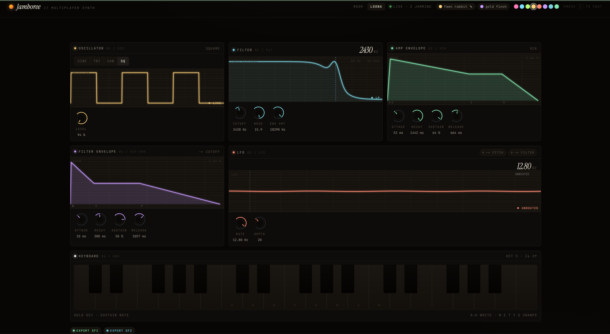
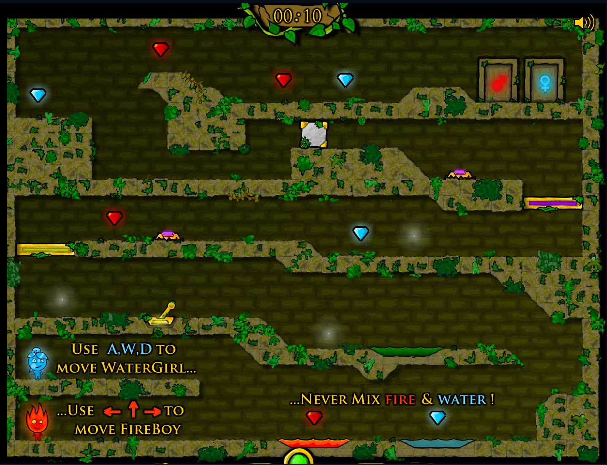
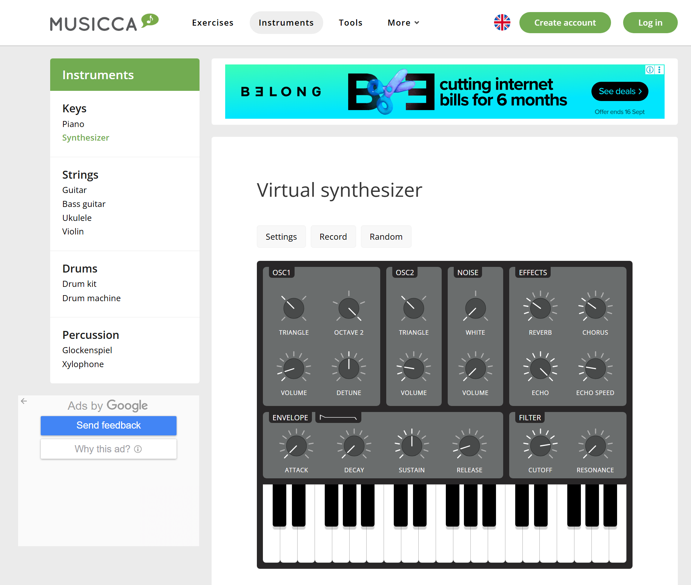
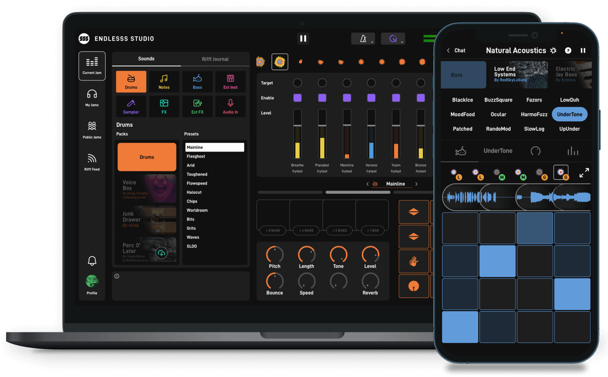

Design Scenario: Multiplayer Synthesizer
Prompt:
Design a synthesizer to be operated by two or more people using a single computer.
Context:
Instruments (and increasingly computational devices) are typically understood as being designed to be operated by one person at a time. While many environments exist for playing these alongside others in physical or virtual spaces, there are limited examples of browser-based instruments exploring what a locally cooperative or split screen approach might produce.
Design Response
Discussion:
When reviewing the brief, my first interpretation was that the experience of the synthesiser should be fulfilling and engaging with both/all users of the experience, considering that they are limited to a singular device. In this case, it would be a computer/laptop, which is mainly designed for one person to use at most times. This brief requires me to focus on the multiplayer aspect for local use, and I would add that it needs to be accessible to allow players to work together, collaboratively. I believe that there are limited examples of browser-based instruments that explore local play as they are usually intended for an individual to use, otherwise multiplayer synthesisers would exist through sharing a link online across multiple devices.
To add onto the multiplayer aspect of the brief, I am drawn to developing a synthesiser that encourages working together rather than using the same device to work simultaneously, and this could be achieved through keyboard inputs where players can navigate the interface using different inputs separate from each other, for example WASD and arrow keys. However, I should not eliminate the presence of the mouse or laptop trackpad as most people are already familiar with using those for navigation, rather than keys. It is possible for second hand devices like instrumental keyboards and such to be plugged into the singular computer to collaborate, but the purpose of this brief is to allow people to use the same device to experiment with the synthesiser.
The potential of developing a shared synthesiser that people can use locally not only involves the benefits of collaboration, but also the learning experiences and the experimentation with different sounds, which is something that should be kept consistent throughout the entire experience. Overall, the synthesiser should be engaging and interesting enough that it can be accessible at the same time by two or more people to learn and create with each other.
Synopsis:
I will design an explorative synthesiser where users will receive a randomised assortment of settings to experiment with in their musical creations to collaboratively develop a soundtrack together. If possible, it would be intended to be used in a type of party or social game where players could get into teams on different devices, to make a fitting soundtrack to the shared prompt using their random assortment of settings.
Response to Purpose and Worth
Responding to this brief, the purpose of my idea is to connect 2 or more people to a designated task, which in this case is to create a soundtrack by working together. It should allow them to collaborate whilst using the same device. Because of the fact that different people will most likely come together to use the synthesiser together, the controls and interface should be minimal with enough information for users to navigate and learn together, not where one person gets it but the other is lost. This means that the requirement for specialised hardware or prior knowledge is not needed, and if used in the long term could have different levels to choose from instead.
The central values to the design are of course, collaboration and inclusivity, but also engagement so that it can encourage users to stay interested in exploring different sounds and styles with others in real time. This leads to experimentation being another value that needs to be upheld so that each user experience is unique and fulfilling, where they have created a unique sound that they are proud to call their own.
Design Framing
When thinking about how users would be able to use the singular device to collaborate and create together locally, I would need to consider the keyboard inputs and mouse control, which is why I believe that the screen display being singular rather than split screen would make sense. All players can look at the screen together to see what is happening in real time, getting used to the interface together instead of looking back and forth between multiple windows to ensure everyone is on the right track. Keyboard inputs should be the main priority for users to be able to hear the sounds they click on, but a mouse may also be necessary for drag and drop and navigating the rest of the menu. Despite claiming that the assortment of settings/sounds given would be random there should still be a limited amount so that there is a type of cohesiveness or familiarity for the users to work from. This means that each time the website is reloaded, the group of sounds will still be randomly generated, but the settings/sounds themselves should be contained to, for example, a total of 100 choices and not an excessive amount like 500.
Design Analysis
Example 1: Jamboree

Jamboree is a browser based online multiplayer synthesiser, where users can create their own rooms and collaborate within the same interface in real time across different devices. The interface is color coded and fairly easy to understand, however some of the text color is too similar to the background and is hard to see due to the typeface being very narrow. Other than that, Jamboree allows you to see the contributions made by others in real time, as well as testing how it sounds by using your keyboard or second hand MIDI device. However, the keyboard that Jamboree provides seems to be very limited, as you have to switch tones up or down to continue using more keys, rather than keeping them all in the same group. Jamboree is a good synthesiser to use online, making it accessible, but at the same time, it does have its UI flaws.
Example 2: Fireboy and Watergirl

Despite not being an instrument, it is still a prime game example that I’d like to analyse due to its focus on local play using keyboard input for the gameplay only. One player uses the WASD keys to move one character and the other player uses the arrow keys to move the other, which is straight forward in itself. The game interface also shows a singular shared screen where both players can see each other and themselves, rather than being split screen. Inspiring the creation of other two-player games, Fireboy and Watergirl utilises these controls very well for players to immediately pick up, and the use of a mouse is only needed to select the next level. However, limiting the controls to a certain group of keys like WASD and the arrows is not enough for users to play around with when it comes to working with a synthesiser, and the ability to drag and click on buttons isn't very possible with the keyboard alone.
Example 3: Musicca

Musicca is a singleplayer online music website where you can choose from different instruments to practice on. Focusing on the synthesiser, it is very straightforward to use with minimal design. I do like that the envelope section has a small graph next to it to show the settings change in real time, but other than that, that's all. I want to focus on the 'Preset' option, as there is an option to randomise the settings, which is what I had in mind when thinking about my own synthesiser. However, if you want to get another random set, you would have to open the drop down and click 'Random' again, which isn't a good example of UI. I do like that they had the explanations of each setting below the synthesiser, but then again, users who are new to the instrument may need to keep scrolling down to see what each toggle does.
Example 4: Endlesss

Endlesss is a downloadable music program/synthesiser that also allows for people to collaborate on the same piece. The interface is color coded vibrantly and is easy to navigate through, but this program does seem more suited to intermediate or advanced users rather than beginners. However the multiplayer aspect of Endlesss seems more intended for different devices on the same piece rather than multiple people using the same device. I think that this example was still worth looking at as out of the other examples I chose to analyse, this one was the most visually engaging and interesting, which is something I need to keep in mind when designing my own synthesiser.